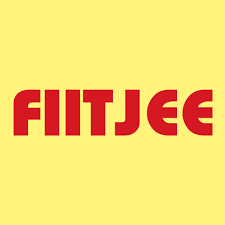

International Institute of Information Technology, Hyderabad
2023 – PresentBachelor of Technology, Computer Science
Undergraduate coursework spanning machine learning, systems, and spatial informatics.
Welcome to my website — a space where I share stories of my life's milestones and stumbling blocks, and where I talk about my skills, interests, and passions. Explore these pages and join me on my journey to learn and discover.
Hi! I'm an undergraduate in Computer Science at IIIT Hyderabad.
I attempt to understand how computation might aid us in answering questions in health, ecology, and human behaviour — from antibiotic discovery and coral-reef forecasting to geospatial models of urban growth and studies of how people reason in different contexts.
I grew up in Hyderabad and occasionally visit the Birla Science Museum and the Golconda Fort. Should you ever arrive here for the first time, I would be delighted to serve as your guide — the city, reading, and music have remained my most faithful companions.
I hope to contribute to endeavours that serve both the people around us and the environment.
IIIT Hyderabad · 2023 – Present
ML for health & the environment, and geospatial modelling
Hyderabad, India
Reading and music
Bachelor of Technology, Computer Science
Undergraduate coursework spanning machine learning, systems, and spatial informatics.

TSBIE — Class 12
Telangana State Board of Intermediate Education; Mathematics, Physics, Chemistry.
CBSE — Class 10
Forever grateful to the many loving teachers who gave me the chance to take part in wonderful music, plays, and so much more.
The languages, libraries, and platforms I have had the chance to interact with most often.
Fourteen projects spanning machine learning, geospatial science, systems, full-stack web, and behavioral science.
A multi-model machine-learning pipeline that identifies antibiotics selectively lethal to pathogens while sparing the gut microbiome — combining Morgan fingerprints, a directed message-passing neural network (D-MPNN), and the MoLFormer-XL chemical language model.
A seven-component, satellite-driven early-warning system for coral bleaching integrating thermal, water-quality and climate-driver sub-indices. Validated across 14 reef systems in three ocean basins, it detected 7/7 documented bleaching events on the Andaman calibration domain — versus 3/7 for NOAA's standard DHW metric.
An IoT system for real-time monitoring of smart refill pods — tracking consumption and fill levels in dispensers, running remote diagnostics on device health, and flagging when a pod is running low or due for replacement, so refills can be scheduled proactively.
A full-stack MERN buy-sell marketplace featuring JWT authentication, full product/category CRUD, reviews and ratings, and search with category, brand, and price filtering.
A human-centred behavioral-economics study (N=96) of why people fall for job scams — testing sunk-cost, loss-aversion and social-proof mechanisms via logistic regression, Bayesian bootstrap, propensity-score matching, and NLP sentiment analysis.
A 2×2 within-subjects experiment (N=35) testing whether social-media engagement (likes) biases people's ability to tell AI-generated from human-written LinkedIn posts, analysed with repeated-measures ANOVA and Signal Detection Theory.
A hybrid Cellular-Automata + Multinomial-Logistic-Regression + Genetic-Algorithm model projecting Hyderabad's built-up expansion from 457 km² (2020) to 1,007 km² (2050) from Landsat imagery, validated to 93%+ accuracy.
A remote-sensing study of how urbanisation reshaped Land Surface Temperature in Jaipur (2014–2024), using index-based land-cover classification (NDBI / NDVI / MNDWI) and the Mono-window algorithm for sector-wise LST analysis.
A distributed client–server file system with a central naming server and multiple storage servers — supporting CREATE/COPY/READ/WRITE/DELETE, asynchronous writes, mp3 streaming with pause/resume, and storage-server failure detection.
Kernel-level extensions to the xv6 OS: a Copy-On-Write fork, custom system calls (syscount, sigalarm), Lottery and Multi-Level-Feedback-Queue schedulers, plus TCP/UDP networked applications and a reliable-UDP transport.
A POSIX-style UNIX shell in C supporting pipes, I/O redirection, foreground/background job control and signal handling, alongside custom built-ins: hop, reveal, seek, log, proclore, activities, and an HTTP-based man-page viewer.
A Flask web application with user authentication that converts uploaded photo sequences and audio into rendered videos, backed by a MySQL store for accounts and media.
An online replication and extension of Reicher's (1969) Word Superiority Effect (N=41), measuring trial-level accuracy and reaction time for target letters shown in real words versus scrambled nonwords.
A Python command-line application backed by MySQL for running a veterinary clinic — managing appointments, animals, billing and medicine inventory, with mentor assignment and summary revenue reporting.